Returned listing
Prodej rodinného domu 150 m², pozemek 216 m²
Bohumín, Karviná
2,799,999 CZK → 2,799,999 CZK
Original advert ↗Daily market update · 2026-11-08 · Ostrava + 15 km
Data limitation: Prices are advertised, not completed transaction prices. Disappeared adverts are NOT proof of sold or rented status. Search radius may be unverified for individual locations. "New" means first observed since a comparable complete Sreality scan, not independently verified as newly published. "New to tracker" may reflect expanded or partial portal coverage. Older Sreality IDs and known cross-lists are excluded. Additional monthly rental charges are not reliably supplied in these search cards.
Bohumín, Karviná
2,799,999 CZK → 2,799,999 CZK
Original advert ↗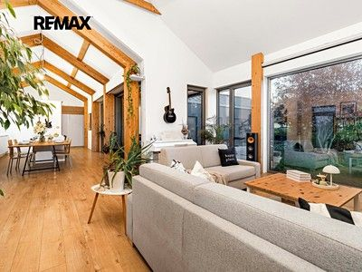
Vřesina, Opava
Not stated → 10,450,000 CZK
Original advert ↗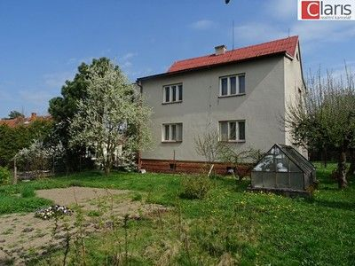
Petřvald, Nový Jičín
4,500,000 CZK → 4,300,000 CZK -4.44%
Original advert ↗Petřvald, Nový Jičín
4,500,000 CZK → 4,300,000 CZK
Original advert ↗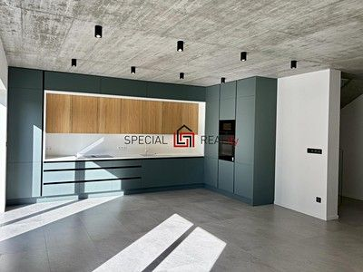
Dolní Lhota, Ostrava-město
14,990,000 CZK → 14,990,000 CZK
Original advert ↗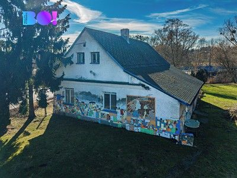
Bludovice, Karviná
3,900,000 CZK → 3,900,000 CZK
Original advert ↗
Hrušov, Ostrava-město
5,995,000 CZK → 5,995,000 CZK
Original advert ↗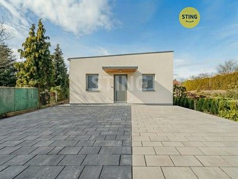
Borová, Opava
6,800,000 CZK → 6,800,000 CZK
Original advert ↗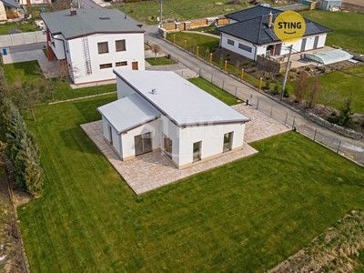
Kobeřice, Opava
9,990,000 CZK → 9,990,000 CZK
Original advert ↗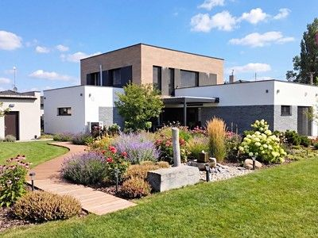
Nová Bělá, Ostrava-město
19,990,000 CZK → 19,990,000 CZK
Original advert ↗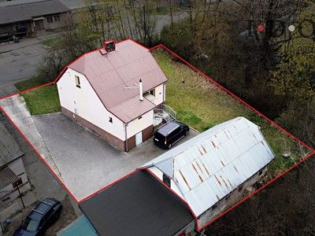
Kunčice, Ostrava-město
4,250,000 CZK → 4,250,000 CZK
Original advert ↗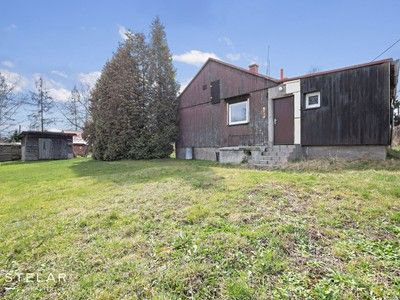
Poruba, Karviná
4,100,000 CZK → 4,100,000 CZK
Original advert ↗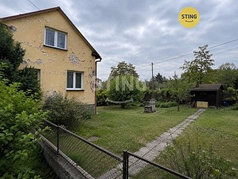
Vratimov, Ostrava-město
4,550,000 CZK → 4,550,000 CZK
Original advert ↗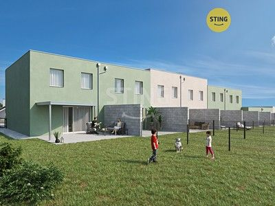
Kobeřice, Opava
8,500,000 CZK → 8,500,000 CZK
Original advert ↗
Horní Těrlicko, Karviná
6,690,000 CZK → 6,690,000 CZK
Original advert ↗
Prostřední Bludovice, Karviná
6,390,000 CZK → 6,390,000 CZK
Original advert ↗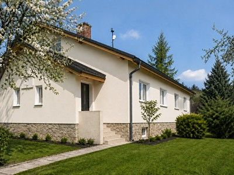
Michálkovice, Ostrava-město
6,119,689 CZK → 6,119,689 CZK
Original advert ↗
Muglinov, Ostrava-město
9,800,000 CZK → 9,800,000 CZK
Original advert ↗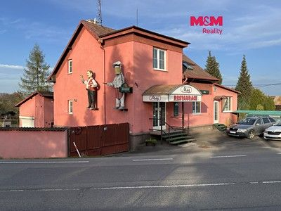
Lutyně, Karviná
5,832,750 CZK → 5,832,750 CZK
Original advert ↗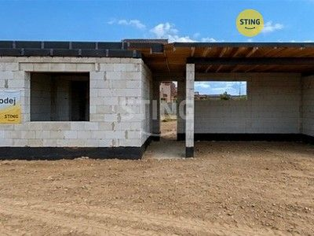
Pustějov, Nový Jičín
4,370,000 CZK → 4,370,000 CZK
Original advert ↗
Klimkovice, Ostrava-město
5,990,000 CZK → 5,990,000 CZK
Original advert ↗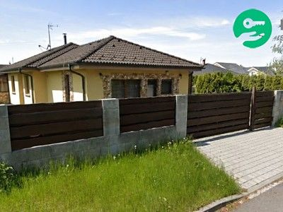
Polanka nad Odrou, Ostrava-město
13,147,179 CZK → 13,147,179 CZK
Original advert ↗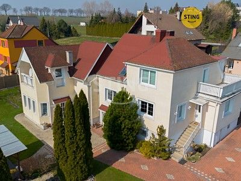
Bolatice, Opava
8,900,000 CZK → 8,900,000 CZK
Original advert ↗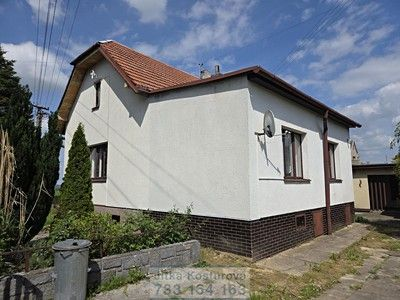
Suché Lazce, Opava
5,190,000 CZK → 5,190,000 CZK
Original advert ↗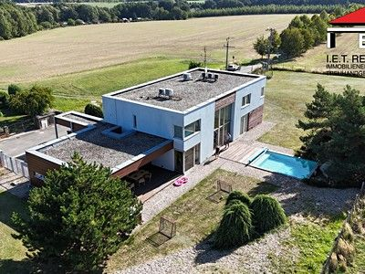
Krásné Pole, Ostrava-město
34,900,000 CZK → 34,900,000 CZK
Original advert ↗
Pustějov, Nový Jičín
3,850,000 CZK → 3,850,000 CZK
Original advert ↗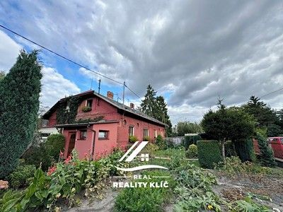
Vítkovice, Ostrava-město
4,999,000 CZK → 4,999,000 CZK
Original advert ↗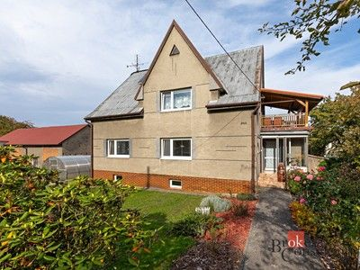
Petřvald 1-Petřvald, Nový Jičín
7,600,000 CZK → 7,300,000 CZK -3.95%
Original advert ↗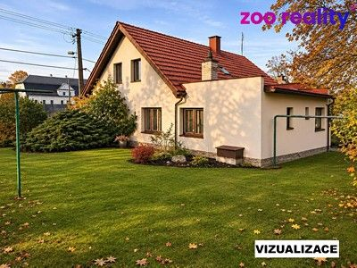
Chlebovice, Frýdek-Místek
Not stated → 5,800,000 CZK
Original advert ↗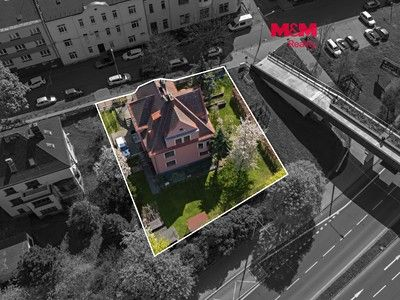
Slezská Ostrava, Ostrava-město
17,990,000 CZK → 17,990,000 CZK
Original advert ↗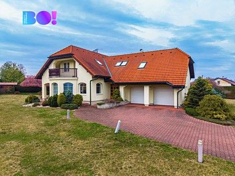
Polanka nad Odrou, Ostrava-město
20,900,000 CZK → 20,900,000 CZK
Original advert ↗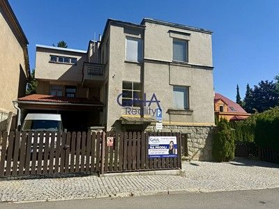
Frýdek, Frýdek-Místek
7,600,000 CZK → 7,600,000 CZK
Original advert ↗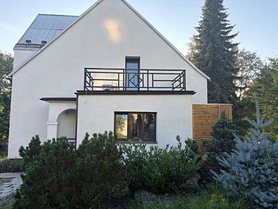
Podlesí, Karviná
7,700,000 CZK → 7,700,000 CZK
Original advert ↗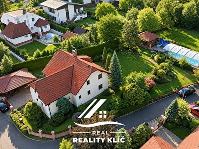
Plesná, Ostrava-město
12,870,000 CZK → 12,870,000 CZK
Original advert ↗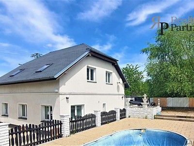
Muglinov, Ostrava-město
7,900,000 CZK → 7,900,000 CZK
Original advert ↗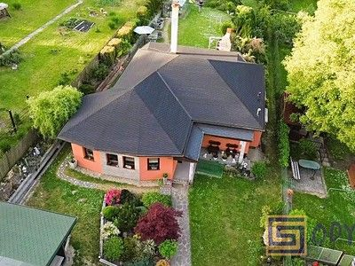
Petřkovice, Ostrava-město
8,790,000 CZK → 8,790,000 CZK
Original advert ↗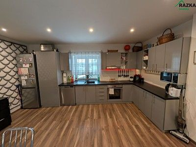
Šilheřovice, Opava
2,970,000 CZK → 2,970,000 CZK
Original advert ↗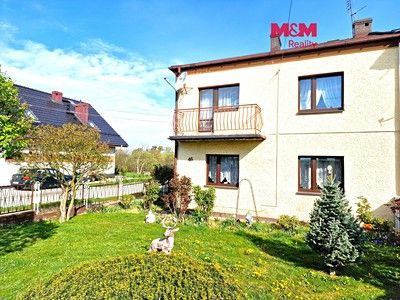
Píšť, Opava
3,350,000 CZK → 3,350,000 CZK
Original advert ↗
Jistebník, Nový Jičín
5,100,000 CZK → 5,100,000 CZK
Original advert ↗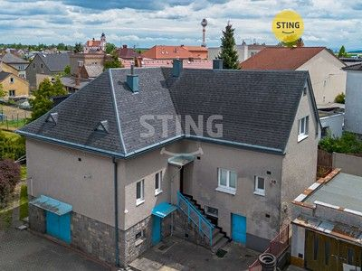
Bolatice, Opava
4,900,000 CZK → 4,900,000 CZK
Original advert ↗
Rychvald, Karviná
5,000,000 CZK → 5,000,000 CZK
Original advert ↗
Ludgeřovice, Opava
4,650,000 CZK → Not stated
Original advert ↗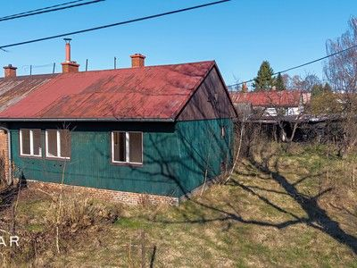
Poruba, Karviná
2,400,000 CZK → 2,400,000 CZK
Original advert ↗
Petřvald, Karviná
9,710,000 CZK → 9,710,000 CZK
Original advert ↗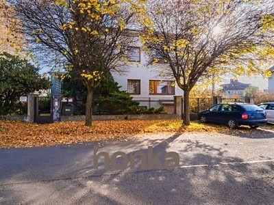
Zábřeh, Ostrava-město
13,230,000 CZK → 13,230,000 CZK
Original advert ↗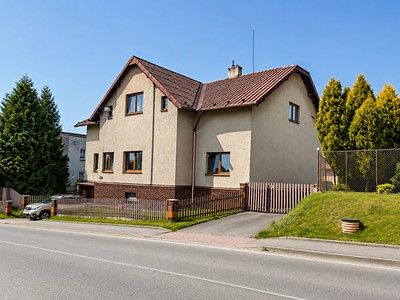
Orlová, Karviná
6,300,000 CZK → 6,300,000 CZK
Original advert ↗
Albrechtice, Karviná
2,990,000 CZK → 2,990,000 CZK
Original advert ↗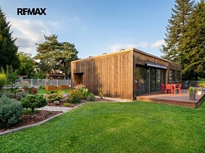
Vřesina, Opava
9,990,000 CZK → 9,990,000 CZK
Original advert ↗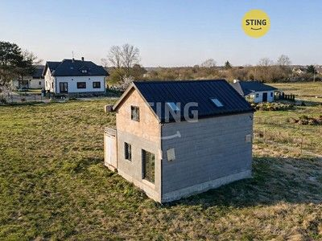
Rychvald, Karviná
4,890,000 CZK → 4,890,000 CZK
Original advert ↗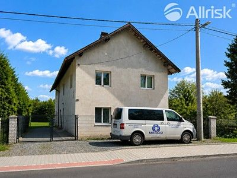
Butovice, Nový Jičín
5,590,000 CZK → 5,590,000 CZK
Original advert ↗
Prostřední Bludovice, Karviná
6,850,000 CZK → 6,850,000 CZK
Original advert ↗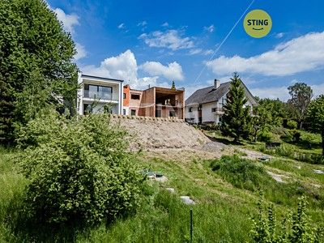
Šenov, Ostrava-město
13,100,000 CZK → 13,100,000 CZK
Original advert ↗